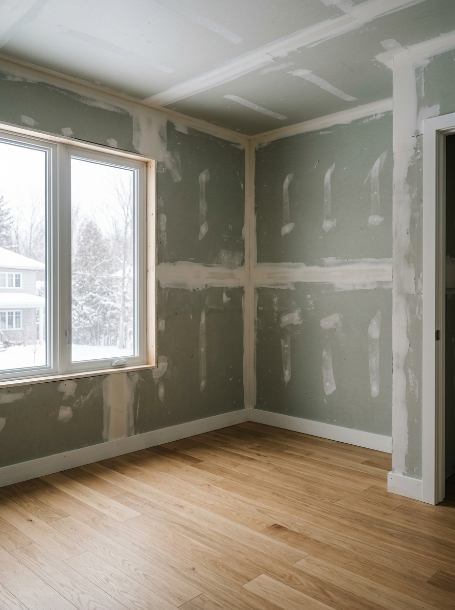
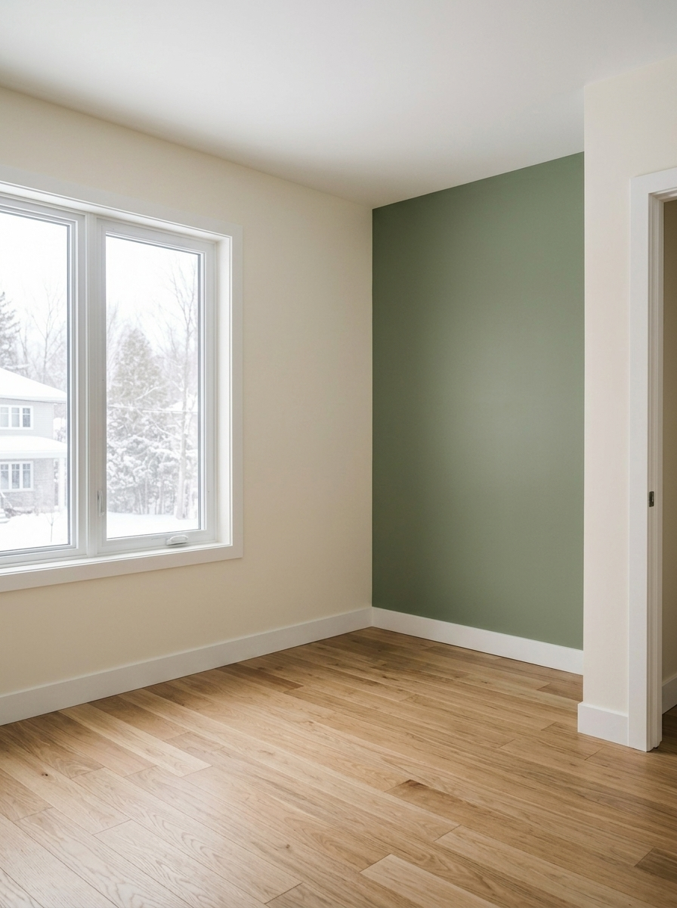

Peinture résidentielle à Brossard
Maisons unifamiliales, jumelés, cottages et logements. Une pièce, un étage ou la maison entière — protection des lieux, petites réparations, finition au latex ou à l'acrylique selon l'usage.
Discuter de mon projetUne équipe qui prépare ses surfaces, protège vos planchers et trace des lignes nettes du premier coup. Intérieur, extérieur, condo, bureau ou commerce — on livre une finition propre, sans surprise, et un chantier qu'on respecte comme si c'était le nôtre.
Repeindre, ce n'est pas juste passer un rouleau. C'est redonner du souffle à une pièce, faire disparaître les petites cicatrices d'un mur, redessiner des lignes droites autour des moulures, et laisser derrière soi un espace qui respire le neuf.
Notre équipe travaille proprement, de la première feuille de protection au dernier coup de pinceau. On prend le temps qu'il faut pour préparer le gypse, reboucher les imperfections, sabler les surfaces et appliquer un apprêt solide. C'est ce qui fait la différence entre une peinture qui paraît bien et une peinture qui est bien faite.
À Brossard comme partout sur la Rive-Sud, on s'occupe de votre projet du début à la fin, sans vous laisser ramasser nos dégâts.


Cliquez pour peindreQue ce soit une seule pièce, une maison entière ou un local commercial, on intervient avec la même rigueur de finition.
Maisons unifamiliales, jumelés, cottages et logements. Une pièce, un étage ou la maison entière — protection des lieux, petites réparations, finition au latex ou à l'acrylique selon l'usage.
Discuter de mon projetMurs, plafonds, moulures, portes, cadrages, plinthes et boiseries. Coupe au pinceau autour des moulures, finis mats ou satinés, lignes nettes du premier coup.
Voir un exempleRevêtements de bois, fibrociment, stuc, aluminium, cadres de fenêtres, galeries et clôtures. Lavage, sablage, masticage et apprêt adapté avant chaque application.
Évaluer mon revêtementEspaces compacts, voisins proches, délais courts entre deux locataires. On travaille proprement, à faible odeur, dans le respect des règles de votre syndicat.
Planifier le chantierBureaux, boutiques, cabinets, locaux de service. Travaux planifiés en dehors des heures d'opération pour ne pas affecter votre clientèle.
Demander une visiteTrous de clous, fissures, joints à reprendre, sablage, dépoussiérage et apprêt sur les zones sensibles. C'est là que se joue la durabilité d'une finition.
Faire évaluer mes mursIl y a un moment, à la fin d'un chantier, où on enlève les protections, on ouvre les rideaux, et la pièce respire différemment.
Les murs paraissent plus lumineux. Le plafond semble plus haut. Les lignes autour des cadres de portes deviennent nettes, presque dessinées. Les petites imperfections qu'on regardait sans s'en rendre compte ont disparu — un trou de cadre rebouché, une fissure dans le coin, une trace laissée par les années.
L'odeur, elle aussi, a changé. C'est cette odeur de peinture fraîche, propre, qui fait dire à tout le monde « on dirait que c'est une autre maison ».
Pas juste une nouvelle couleur sur un mur, mais une pièce qui se sent soignée, calme, bien entretenue.
Cinq étapes claires, du premier appel au dernier nettoyage, pour qu'aucune surprise ne s'invite sur votre chantier.
On comprend votre projet, on évalue les surfaces, on aligne les attentes. Soumission claire, sans frais surprises.
Planchers, meubles, électros et luminaires sont couverts avant qu'un seul outil ne sorte du camion.
Réparations, tirage de joints au besoin, sablage, dépoussiérage et application d'apprêt sur les zones qui le demandent.
Coupe au pinceau, rouleau pour les grandes surfaces, deux couches lorsque c'est nécessaire, temps de séchage respectés.
On marche la pièce avec vous. Si quelque chose ne va pas, on retouche avant de partir. Chantier propre, prêt à habiter.
Pas de gouttes oubliées sur les planchers, pas de traces sur les plinthes, pas d'angles bâclés.
On répare avant de peindre. C'est ce qui fait durer la finition, parfois pendant 10 ans.
On coupe au pinceau, à main levée. Aucune correction au ruban après coup.
Vous savez exactement ce qui est inclus et ce qui ne l'est pas. Aucune surprise sur la facture.
On s'engage sur une date, on la tient. Si le contexte change, on vous le dit avant — pas après.
Vous parlez toujours à la même personne, du premier appel à l'inspection finale.
On dessert principalement Brossard et ses secteurs résidentiels — Secteur C, L, N, R, S, T et P — ainsi que le Quartier DIX30 et les rues environnantes. On se déplace aussi dans les villes voisines de la Rive-Sud lorsque le projet le demande.
Vous ne trouvez pas votre réponse ? Écrivez-nous, on prend le temps de répondre clairement.
Poser une questionPour une chambre standard, on parle d'une à deux journées, selon l'état du gypse et le nombre de couches nécessaires. Une maison complète prend habituellement entre 4 et 10 jours ouvrables.
Non. On déplace les meubles légers et on les protège sur place. Vous n'avez qu'à retirer les objets fragiles, les œuvres d'art et le contenu des tablettes.
On utilise des peintures au latex et acrylique de qualité professionnelle, à faible odeur, adaptées à chaque pièce — cuisine, salle de bain, chambre, plafond ou extérieur.
Oui. On vous guide selon la lumière naturelle de la pièce, le mobilier en place et l'effet recherché. Vous restez la personne qui décide, mais jamais seule devant un éventail.
Oui. Trous de clous, fissures, coins abîmés, joints à retirer ou à refaire : on s'en occupe avant de passer à l'apprêt. Pour des dommages plus importants, on vous le mentionne avant de commencer.
Oui. Pour les bureaux et locaux commerciaux, on planifie les travaux en dehors des heures d'opération afin de ne pas affecter votre clientèle.
Oui. On se déplace sans frais à Brossard et sur la Rive-Sud pour évaluer le projet et vous remettre une soumission claire.
On revient. Si quelque chose ne tient pas comme prévu ou qu'une retouche est nécessaire, on s'en occupe rapidement.
Une seule pièce, une maison complète, un condo entre deux locataires ou un local commercial à rafraîchir — on se déplace, on mesure, et on vous propose une soumission qui tient debout.